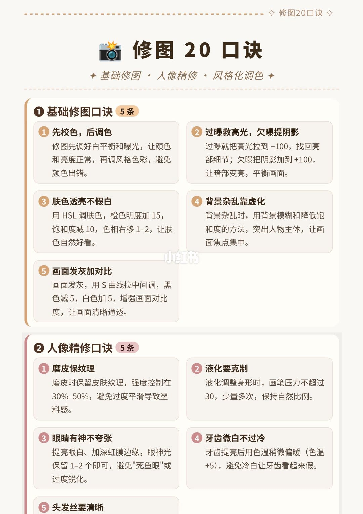
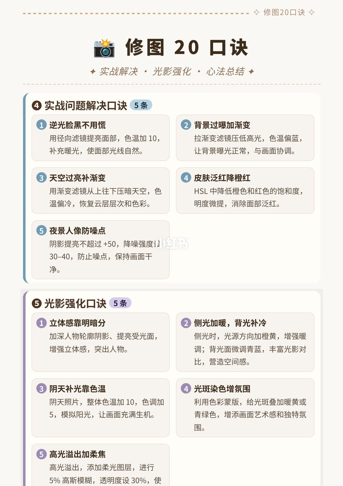

第 1 页：基础修图与人像精修

页顶装饰字写着修图 20 口诀。主标题同样是「修图20口诀」。副标题三个词是「基础修图 · 人像精修 · 风格化调色」。风格化调色只出现在这行副标题里，本页没有对应卡片。
① 基础修图口诀，标了 5 条
第一条「先校色，后调色」。正文：修图先调好白平衡和曝光，让颜色和亮度正常，再调风格色彩，避免颜色出错。
第二条「过曝救高光，欠曝提阴影」。过曝就把高光拉到 -100，找回亮部细节；欠曝把阴影加到 +100，让暗部变亮，平衡画面。
第三条「肤色透亮不假白」。用 HSL 调肤色，橙色明度加 15，饱和度减 10，色相右移 1-2，让肤色自然好看。图上没有写色相的单位。
第四条「背景杂乱靠虚化」。背景杂乱时，用背景模糊和降低饱和度的方法，突出人物主体，让画面焦点集中。模糊和降饱和都没有给数值。
第五条「画面发灰加对比」。画面发灰，用 S 曲线拉中间调，黑色减 5，白色加 5，增强画面对比度，让画面清晰通透。
② 人像精修口诀，标了 5 条
第一条「磨皮保纹理」。磨皮时保留皮肤纹理，强度控制在 30%–50%，避免过度平滑导致塑料感。
第二条「液化要克制」。液化调整身形时，画笔压力不超过 30，少量多次，保持自然比例。压力 30 的满量程没有写出。
第三条「眼睛有神不夸张」。提亮眼白、加深虹膜边缘，眼神光保留 1-2 个即可，避免「死鱼眼」或过度锐化。
第四条「牙齿微白不过冷」。牙齿提亮后用色温稍微偏暖（色温 +5），避免冷白让牙齿看起来假。
第五条只露出标题「头发丝要清晰」，解释句被页底裁掉，标为无法确认。
第 2 页：实战排障与光影强化

主标题是「修图 20 口诀」。副标题三个词是「实战解决 · 光影强化 · 心法总结」。心法总结同样只在副标题里，本页没有那一组卡片。组号从上一页的②直接到本页的④。
④ 实战问题解决口诀，标了 5 条
第一条「逆光脸黑不用慌」。用径向滤镜提亮面部，色温加 10，补充暖光，使面部光线自然。
第二条「背景过曝加渐变」。拉渐变滤镜压低高光，色温偏蓝，让背景曝光正常，与画面协调。压低多少、偏蓝多少，图上没有写。
第三条「天空过亮补渐变」。用渐变滤镜从上往下压暗天空，色温偏冷，恢复云层层次和色彩。压暗幅度无法确认。
第四条「皮肤泛红降橙红」。HSL 中降低橙色和红色的饱和度，明度微提，消除面部泛红。「微提」没有数字。
第五条「夜景人像防噪点」。阴影提亮不超过 +50，降噪强度设 30-40，防止噪点，保持画面干净。
⑤ 光影强化口诀，标了 5 条
第一条「立体感靠明暗分」。加深人物轮廓阴影、提亮受光面，增强立体感，突出人物。加深和提亮都没有数值。
第二条「侧光加暖，背光补冷」。侧光时，光源方向加橙黄，增强暖调；背光面微调青蓝，丰富光影对比，营造空间感。
第三条「阴天补光靠色温」。阴天照片，整体色温加 10，色调加 5，模拟阳光，让画面充满生机。
第四条「光斑染色增氛围」。利用色彩蒙版，给光斑叠加暖黄或青绿色，增添画面艺术感和独特氛围。两种颜色怎么选，图上没有写。
第五条「高光溢出加柔焦」。看得见的句子停在：高光溢出，添加柔光图层，进行 5% 高斯模糊，透明度设 30%，使。后面被页底裁掉，标为无法确认。
汇总结论
结论
看得见的口诀把修图分成两段：第 1 页先校白平衡和曝光，再用固定幅度处理高光、阴影、橙色肤色、发灰和杂乱背景，人像精修则给磨皮、液化和眼神光设上限；第 2 页改用径向、渐变、色彩蒙版和冷暖，处理逆光脸、过曝背景、亮天空、泛红、夜景噪点和光影层次。副标题点到的风格化调色和心法总结，这两页没有正文。
支撑页
- 先校色后调色，高光 -100、阴影 +100，橙色明度 +15、饱和度 -10、色相右移 1-2，背景模糊加降饱和，S 曲线与黑 -5、白 +5，都在第 1/2 页基础修图。
- 磨皮 30%–50%、液化压力不超过 30、眼神光 1-2 个、牙齿色温 +5，在第 1/2 页人像精修。头发丝只有标题。
- 径向滤镜加色温 +10、渐变压高光并偏蓝、天空从上往下压暗并偏冷、橙红降饱和且明度微提、阴影不超过 +50 且降噪 30-40，在第 2/2 页实战问题解决。
- 轮廓阴影与受光面、侧光橙黄与背光青蓝、阴天色温 +10 与色调 +5、光斑暖黄或青绿，以及柔光图层、5% 高斯模糊、透明度 30%，在第 2/2 页光影强化。柔焦句末被裁。
边界
- 两页组号是①②和④⑤。风格化调色、心法总结只在页眉副标题，没有卡片，不能补写。
- 「头发丝要清晰」的做法，以及「高光溢出加柔焦」在「使」之后的半句，页底裁切，无法确认。
- 图上没有软件名称。高光 -100、阴影 +100、液化压力 30、高斯模糊 5% 都没有写满量程或适用直方图，不能当成任何素材的固定值。
- 「明度微提」、背景模糊幅度、渐变压低多少、色温偏蓝或偏冷多少，图上没有数字。